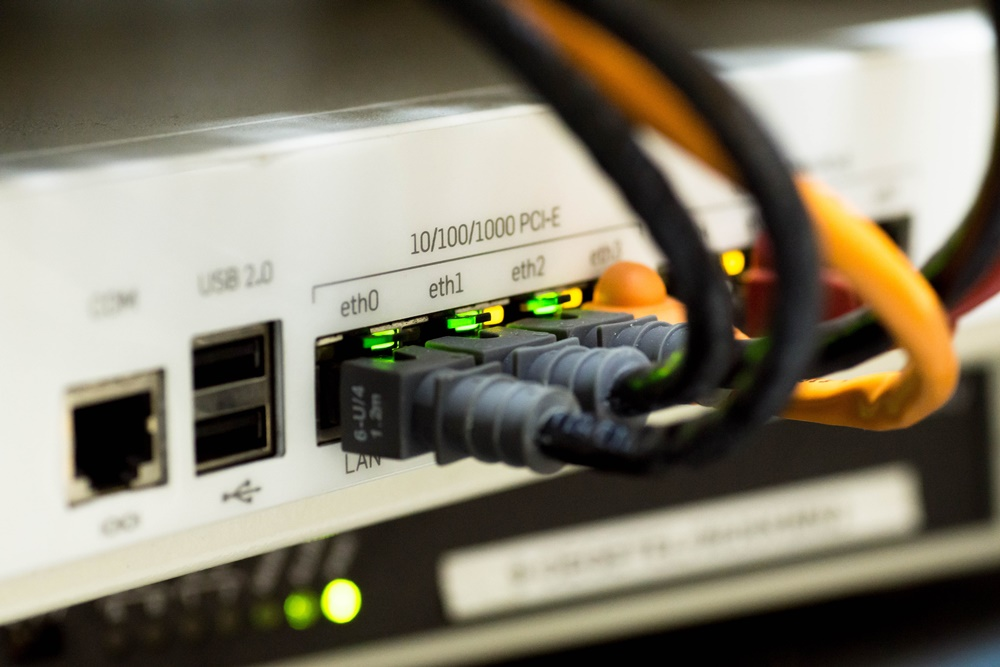

Componentes de Microcomputadores
Componentes internos
- 1.1 CPU
- 1.1.2 Armazenamento
- 1.1.3 Memória
- 1.1.4 Fonte de alimentação
Componentes externos
- 1.2.1 Teclado
- 1.2.2 Monitor de vídeo
- 1.2.3 Mouse
- 1.2.4 Impressora
- 1.2.5 Plotter
- 1.2.6 Scanner
- 1.2.7 Gabinete
- 1.2.8 Web Cam
- 1.2.9 Caixas de som
- 1.2.10 Microfone
- 1.2.11 Head Set
Interfaces de entrada e saída
- 1.3.1 Interfaces sem fio
- 1.3.2 Áudio
- 1.3.3 Rede (Ethernet)
- 1.3.4 VGA
- 1.3.5 HDMI
- 1.3.6 USB
Componentes de Microcomputadores
Componentes internos
1.1 CPU
A CPU (Unidade Central de Processamento) é o cérebro do computador, responsável por executar as instruções e realizar os cálculos necessários para o funcionamento do sistema.
1.1.2 Armazenamento
O armazenamento em um microcomputador refere-se aos dispositivos utilizados para armazenar dados, como discos rígidos (HDDs) e unidades de estado sólido (SSDs), que permitem a gravação e recuperação de informações de forma permanente.
1.1.3 Memória
A memória em um microcomputador é responsável por armazenar temporariamente os dados e as instruções que são necessários para a execução das tarefas. Isso inclui a memória RAM (Random Access Memory) e a memória cache, que fornecem acesso rápido aos dados utilizados pelo processador.
1.1.4 Fonte de alimentação
A fonte de alimentação é responsável por fornecer energia elétrica aos componentes do microcomputador. Ela converte a corrente elétrica da tomada em tensões adequadas para o funcionamento dos diferentes componentes do sistema.
Componentes externos
1.2.1 Teclado
O teclado é um dispositivo de entrada que permite ao usuário inserir comandos e caracteres no computador. Ele consiste em um conjunto de teclas que representam letras, números, símbolos e funções especiais.
1.2.2 Monitor de vídeo
O monitor de vídeo exibe as informações processadas pelo computador. Ele permite ao usuário visualizar imagens, textos, vídeos e interfaces gráficas do sistema operacional e dos aplicativos.
 1.2.3 Mouse
1.2.3 Mouse
O mouse é um dispositivo de entrada utilizado para controlar o cursor na tela do computador. Ele permite ao usuário selecionar, clicar e arrastar elementos, facilitando a interação com o sistema operacional e os aplicativos.

1.2.4 Impressora
A impressora é um dispositivo de saída que permite a geração de documentos físicos a partir de dados digitais. Ela pode imprimir textos, imagens e gráficos em papel ou outros materiais.
1.2.5 Plotter
A plotter é um dispositivo de saída utilizado principalmente para imprimir gráficos de alta qualidade e desenhos técnicos. Ela é capaz de traçar linhas precisas e detalhadas em grandes formatos.
1.2.6 Scanner
O scanner é um dispositivo de entrada que permite digitalizar imagens, documentos e fotografias para serem armazenados digitalmente no computador. Ele captura a imagem física e a converte em dados digitais.
1.2.7 Gabinete
O gabinete é a estrutura que abriga todos os componentes internos do microcomputador. Ele fornece suporte e proteção aos componentes.
1.2.8 Web CamA web cam é um dispositivo de entrada de vídeo que captura imagens em tempo real e as transmite para o computador. Ela é amplamente utilizada para videoconferências, videochamadas e captura de vídeos.

1.2.9 Caixas de som
As caixas de som são dispositivos de saída que reproduzem áudio gerado pelo computador. Elas permitem ao usuário ouvir sons, músicas, diálogos e outros conteúdos sonoros emitidos pelo sistema.
1.2.10 Microfone
O microfone é um dispositivo de entrada que converte o som em sinais elétricos para que possam ser processados pelo computador. Ele permite ao usuário gravar áudio, fazer chamadas de voz e interagir com aplicativos de reconhecimento de voz.

1.2.11 Headset
O headset é um dispositivo que combina fones de ouvido e microfone, permitindo ao usuário ouvir áudio e também se comunicar por voz. É amplamente utilizado em jogos, chamadas de voz e aplicações de áudio e vídeo.
Interfaces de entrada e saída
1.3.1 Interfaces sem fio
As interfaces sem fio são tecnologias que permitem a transmissão de dados entre o computador e outros dispositivos sem a necessidade de cabos. Exemplos comuns incluem Wi-Fi, Bluetooth e NFC.
1.3.2 Áudio
A interface de áudio é usada para conectar dispositivos de entrada e saída de áudio ao computador. Ela permite a conexão de fones de ouvido, caixas de som, microfones e outros dispositivos de áudio.
1.3.3 Rede (Ethernet)
A interface de rede Ethernet é utilizada para conectar o computador a uma rede local com fio. Ela permite a transferência de dados em alta velocidade e é comumente usada para acesso à internet e comunicação em rede.
1.3.4 VGA
A interface VGA (Video Graphics Array) é um padrão de conexão de vídeo analógico amplamente utilizado para conectar o computador a monitores e projetores. Ele suporta a transmissão de sinais de vídeo de alta qualidade.

1.3.5 HDMI
A interface HDMI (High-Definition Multimedia Interface) é um padrão de conexão de vídeo digital usado para transmitir áudio e vídeo de alta definição. Ela é comumente usada para conectar o computador a monitores, TVs e outros dispositivos compatíveis.
1.3.6 USB
A interface USB (Universal Serial Bus) é uma interface de conexão que permite a transferência de dados e a conexão de dispositivos externos ao computador. Ela é amplamente utilizada para conectar dispositivos como teclados, mouses, impressoras, pen drives, entre outros.